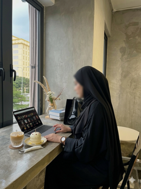
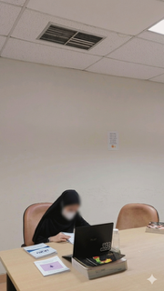
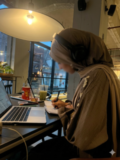
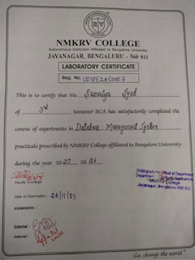
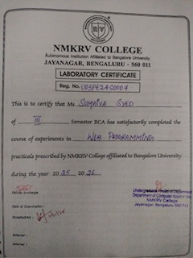
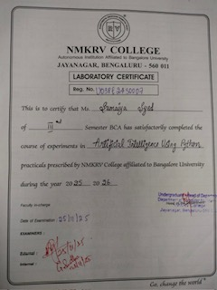
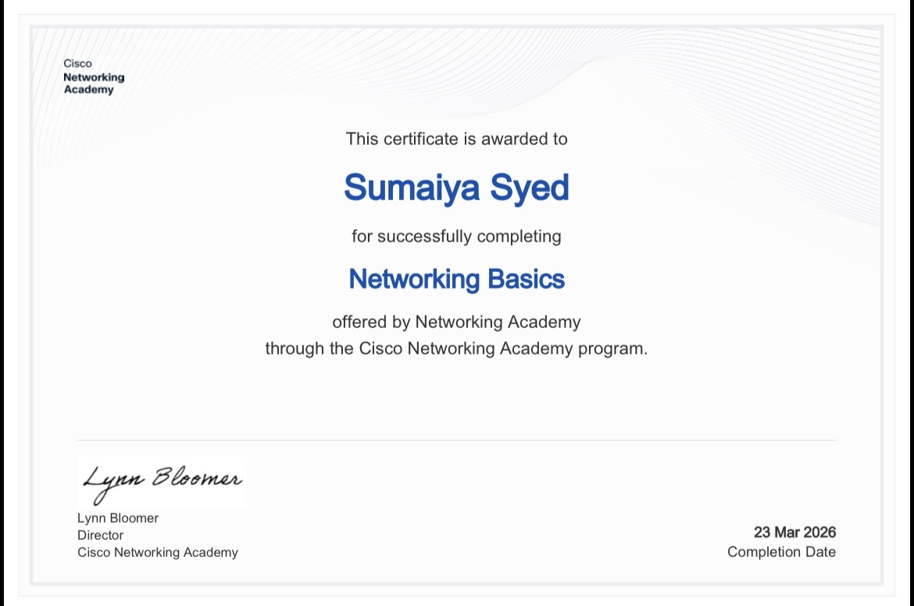
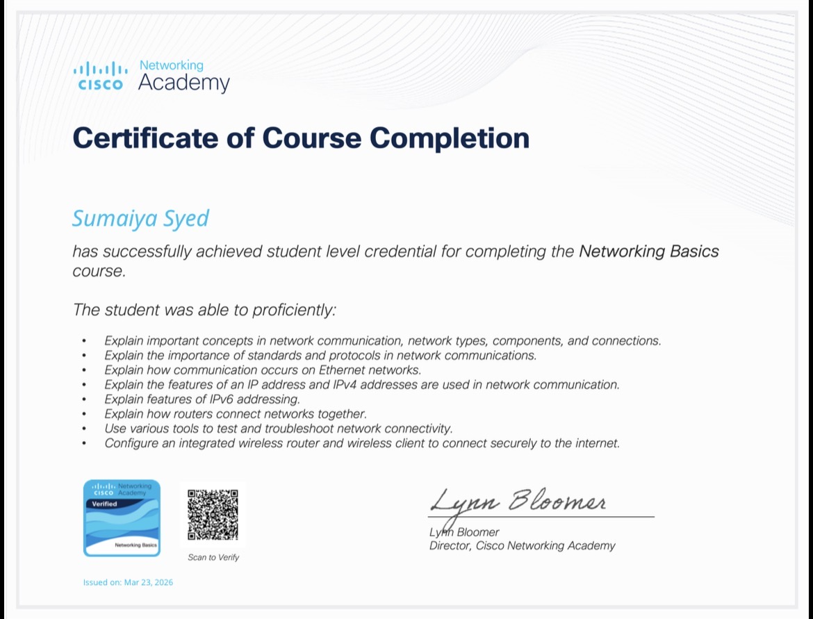
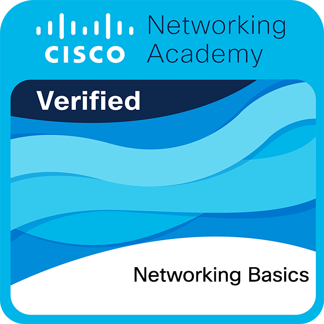

Quick Snapshot

Sumaiya Syed
Who am I?
I am a frontend and backend developer with a strong interest in beautiful user interfaces, organized code, and meaningful digital experiences. I bring curiosity, adaptability, and a serious work ethic to everything I build.
What do I do?
- Build responsive websites with HTML, CSS, and JavaScript
- Understand backend logic with Java, SQL, Python, PHP, and C++
- Learn fast and move forward even when tasks are challenging
About Me
93% of my growth comes from curiosity, consistency, and real effort.
As a student, I am still growing, but I already take my work seriously. If something is new to me, I study it, understand it, and keep going until I can deliver it properly. I want my work to feel both technically strong and visually memorable.

Built With
HTML, CSS, JavaScript, custom styling, responsive layout thinking, and polished presentation.
My Work
Visual moments that represent how I learn, build, and show up.


Skills
A balanced skill set across frontend, backend, and problem solving.
Java
C++
JavaScript
HTML
CSS
SQL
Python
PHP
Frontend
Backend
My Strength
I combine design instinct with technical discipline.
I enjoy frontend work that feels premium and clear, while also understanding the logic underneath. That mix helps me think about the full experience, not just one layer of it.
Design Language
Editorial, elegant, image-led, and intentionally personal.
I wanted the website to feel premium and memorable while still clearly presenting who I am and what I can do.
Approach
Clear structure, attractive visuals, and content that feels like me.
The layout balances aesthetics, achievements, and direct communication so the portfolio feels professional without becoming overly formal.
Frontend Strength
Interfaces that feel elegant, readable, and alive.
I like clean layouts, strong hierarchy, and interaction that supports the content rather than distracting from it.
Backend Strength
Logic that supports real application thinking.
My interest in Java, SQL, Python, PHP, and C++ helps me understand application flow, data, and the structure behind the interface.
Personal Mindset
Learn, adapt, execute.
Even if a task begins beyond my current level, I am willing to learn what is needed and move forward with commitment.
Certificates
Achievements that reflect my effort, learning, and growth.

NMKRV College
Desktop Publishing Skills
Laboratory certificate recognizing practical completion in desktop publishing skills.
View Certificate
NMKRV College
Web Programming
Practical coursework certificate aligned with web development fundamentals and browser-based application building.
View Certificate
NMKRV College
Artificial Intelligence Using Python
Hands-on certificate reflecting Python-based AI exposure and intelligent application thinking.
View Certificate
Cisco Networking Academy
Networking Basics
Official Cisco recognition for successfully completing Networking Basics on March 23, 2026.
View Certificate
Cisco Networking Academy
Networking Basics Course Completion
Verified learning in networking concepts, protocols, addressing, routing, and troubleshooting.
View Certificate
Cisco Verified Badge
Networking Basics Badge
A recognizable achievement badge that reinforces the networking credential visually.
View BadgeWhat makes me different
I do not step away from difficult work.
I am someone who is willing to learn fast, improve continuously, and give genuine effort. I want the final result to look thoughtful, feel complete, and reflect seriousness toward the opportunity.
Best Fit
Teams who value initiative, adaptability, and momentum.
I work best where I can contribute creatively, technically, and with a mindset that keeps moving forward.
What This Shows
Not only what I know, but how I present, organize, and communicate my work.
Presentation
Strong visual direction with a clean personal identity.
The portfolio is designed to feel attractive, memorable, and professionally put together.
Structure
Clear sections for who I am, what I do, what I know, and what I have achieved.
This makes the website easy to scan while still feeling creative and personal.
Execution
Built with core web technologies and customized around my own content.
It reflects both design sense and practical development understanding in one experience.
Growth
A website I can keep improving as I gain more skills, certificates, and opportunities.
It is meant to grow with me while still feeling complete right now.
Let's Connect
If you want a developer who is skilled, ambitious, and ready to grow, I'm ready.
I am ready to contribute with creativity, technical skill, and real commitment, and I want every project I touch to show that clearly.